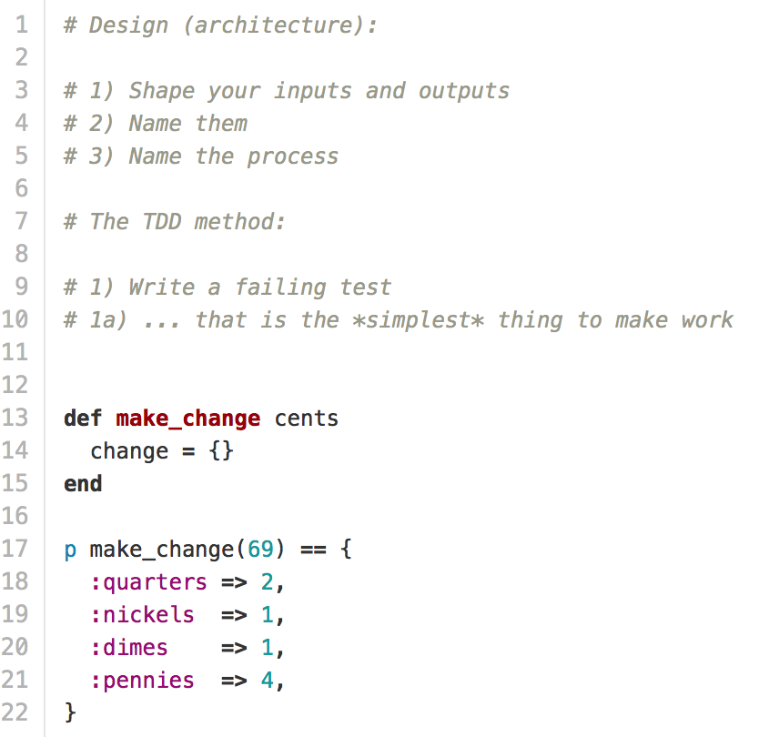
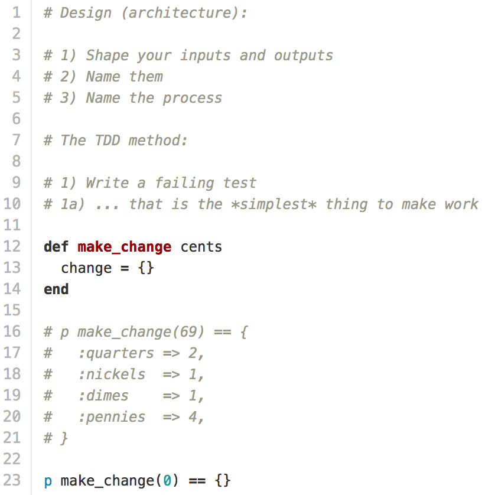
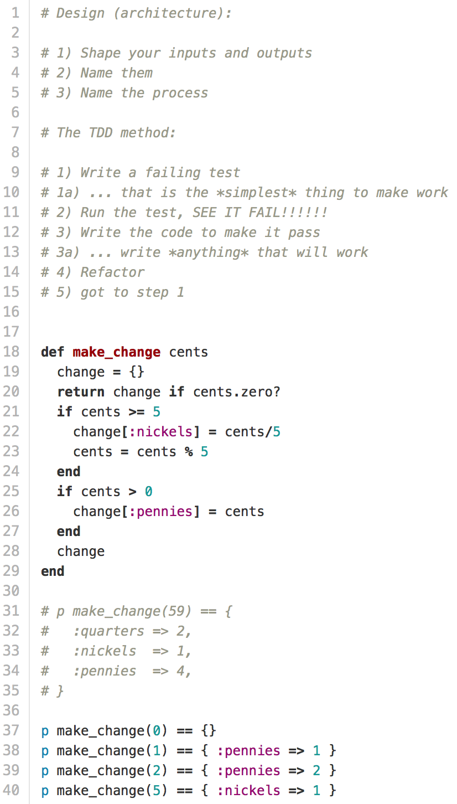

TDD
Today we had the opportunity to listen to special guest lecturer (Myles Byrne) talk about TDD(If you haven't seen a pattern about development yet from skimming my posts, developers love acronyms). TDD stands for Test Driven Development, which is a workflow in solving the problem with your code.
Now sit back and let that last sentence digest in your brain.
This was a novel approach for many of us in DevBootCamp. You see, in the days prior to learning about TDD many of us didn't have a proper workflow as we solved challenges given to us by DBC. Sure, we were able to distill the basics of user stories(what you want your application to be able to do from the user POV) and write bad pseudocode, but how the heck were you supposed to translate that stuff into the actual code? Let's take a look at how Myles broke down a problem of separating change into quarters, nickels, dimes, and pennies. (This is starting from the point after you have identified the problem and constraints)
The very first thing that Myles did was to create an overall test found on line 17. As we write this, we can identify the methods involved in our solution and the parts involved in each method. So we can tell from our overall test that there should be a method called make_change that takes a parameter(69) and should return a hash of symbols and integers. After writing this, we can start TDD.
Steps 1-2: Write a failing test and see it fail.
You need to fail. By writing a simple failing test, you can identify subsets within your big problem. It also forces you to take things slowly as you write failing tests that are easy to fix. You need to go through step 2 of actually seeing your test fail because if your test passes, you need to immediately start troubleshooting. The core concept that TDD distills is knowing everything that happens in your code, so if your code behaves in a way that is contrary to how you think it will behave it shows that you don't have a clear grasp of your code. If you pass ahead into the image under Step 3; Myles created the test on line 23 first and saw it fail before starting on the solution to the test on lines 12-14.
Step 3: Write the code to make your failing test pass.
We create a very simple test. If we have 0 cents, make_change should return an empty hash. Lines 12-14 solves this test.
Step 4: Refactor
Do you see any patterns in the code? If so, try to break it down so that your code is D.R.Y.
Repeat from Step 1.
Start at the top. Create another failing test. Take a look at line 40 below and pretend that lines 21-23 haven't existed yet. We would have failed our test since the :nickels key wouldn't have been created yet. As we watch our test fail, our next steps would be to create the code that would pass our test i.e. lines 21-23.
